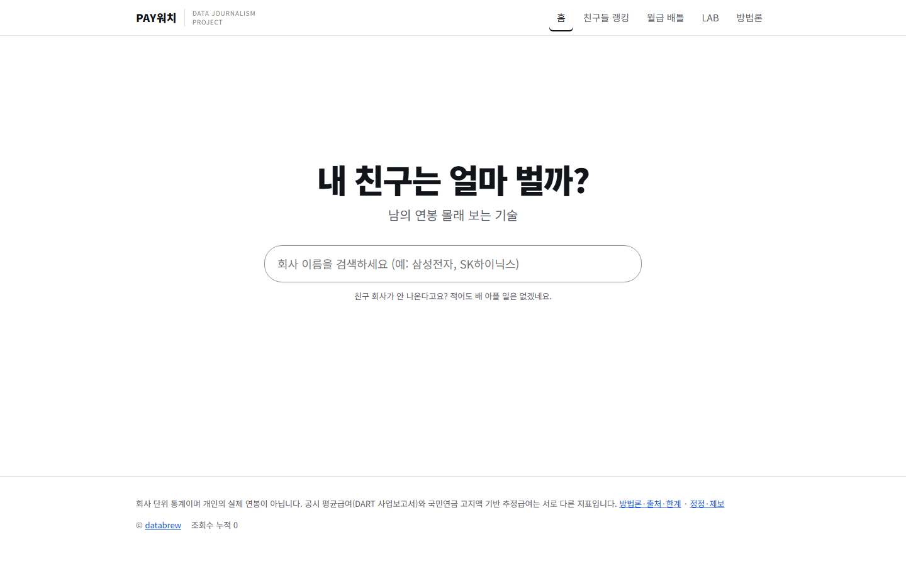
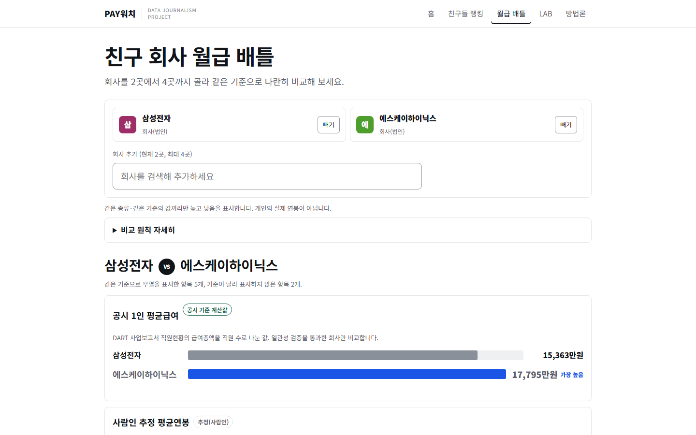
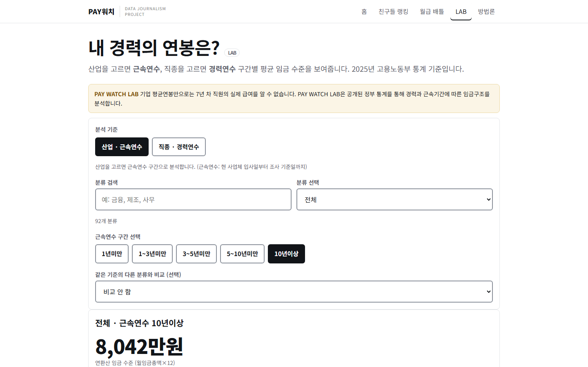

What this service is
You may know which company a friend works at, but not what people at that company earn on average. Listed companies and externally audited corporations disclose their headcount and total pay in business reports, yet few places present it in an easy-to-read form.
PAY Watch shows those numbers from just a company name. It displays the representative average salary in large type, with the source and reference year right below it. Then comes the fun part: gather your friends' companies into a ranking, pit two or three against each other like Samsung Electronics vs. SK hynix, and see where your friend's company stands within its industry.
The part we worked hardest on is the salary-by-tenure estimate. A company's average salary alone can't tell you what a seventh-year employee earns, so we fitted the official wage structure of the same industry to that company's average salary to build salary ranges by tenure bracket. Rather than pin down a single assumption, the range is computed from several tenure-mix scenarios, and if the result depends too heavily on the assumptions or the range is too wide, no number is produced.
The other principles are simple. Disclosed values, estimated values and values back-calculated from the National Pension differ in nature, so they are never mixed into one ranking, and values with weak grounding are marked "no data."
The average salary on screen is a company-wide average, not an individual's actual salary. It includes bonuses and incentive pay, and pay by job type or rank cannot be known.
What you can do
Find any of 5,463 companies from a single search box. The result screen shows the representative average salary, the source (DART filing or Saramin estimate) and reference year, average tenure and headcount, and location.
Tap through five brackets, from under 1 year to 10+ years, to see the average salary range of that group. An experimental research feature that shows a basic estimate reflecting only workforce composition alongside an extended estimate that also reflects changes in the shape of the pay curve.
Enter the companies your friends work at and get a ranking of who among you works at the best-paying company. Rankings by company and by industry can also be viewed separately. It is based on the average salary of the company they work for, not on the friends themselves.
Pick 2 to 4 companies and compare them side by side on the same basis. Matchups such as Samsung Electronics vs. SK hynix, Hyundai Motor vs. Kia, Naver vs. Kakao, and KB Kookmin Bank vs. Shinhan Bank are ready. The highest is marked only among values of the same kind, and no overall winner is declared.
Choose an industry to see average wage levels by years of tenure, or choose an occupation to see them by years of experience, using the Ministry of Employment and Labor's 2025 statistics. You can choose from 92 industry classifications and compare against other classifications.
Inside the company screen, see pay back-calculated from National Pension enrolled-workplace data alongside the disclosed value. It is not used as the average salary; it serves only as a reference indicator for checking whether the contribution cap applies.
Screen preview

Home — just search a company name
Company — disclosed average pay and tenure-bracket estimates

Salary battle — compared only on the same basis

LAB — wage level for your career bracket
Data and how it is calculated
Companies with an average salary currently shown number 4,000 (2,071 from DART, 1,929 from Saramin). For the representative value, only one source is chosen in the order DART filing, Saramin estimate, no data, and the raw values from each source are kept separately without overwriting one another. Tenure-bracket estimates are provided only for 1,888 DART-based companies and 794 industry-reference estimates based on Saramin average salary. The methodology version is 0.4.0-stage4.
What can't be known
The average salary is a company-wide average. Even within the same company, pay varies widely by role and rank, and the tenure-bracket numbers are experimental estimates whose accuracy has not been independently verified. Companies in the same industry have heavily overlapping estimate ranges, so don't use them as grounds for ranking companies.
Unlisted companies may have no DART value, and unusually high disclosed values such as those of holding companies are shown as they are if there is no consistency problem, with a note to be careful when comparing. Individual salaries, pay by job type, total compensation including bonuses and incentive pay, the number of hires and leavers and the turnover rate, and compensation relative to business performance cannot be known.
The figures are not an evaluation or judgment of any company. Please check the source data before citing them. Corrections and tips are accepted through the link at the bottom of the service screen.
Technology and how it was built
Raw disclosure data is collected, verified and matched with a Python pipeline, then built into static files and deployed. Visit statistics are counted only with cookie-free GoatCounter, and no personally identifying information is collected.
Development status
Launched 2026-11-07. Offers integrated search of 5,463 companies, tenure-bracket estimates, salary battles and the LAB. When new data is obtained, it is refined, verified and added, and recorded in the history on the methodology page.